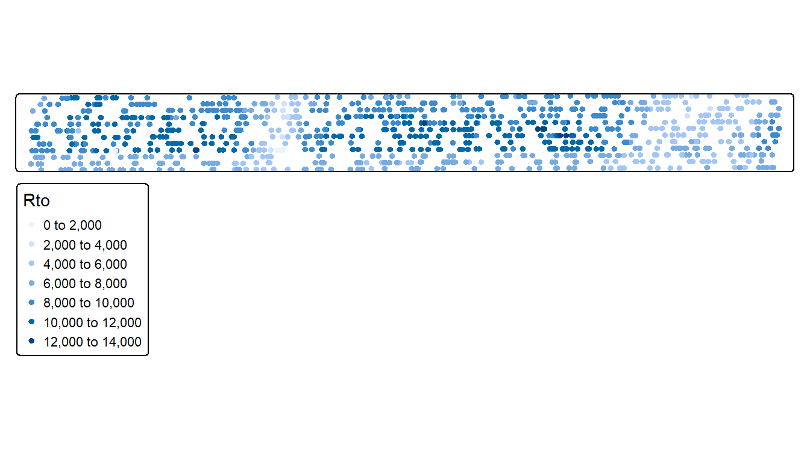
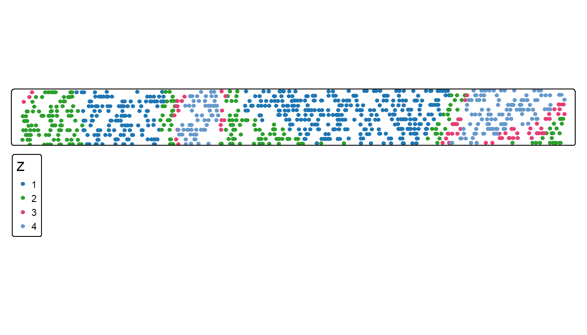
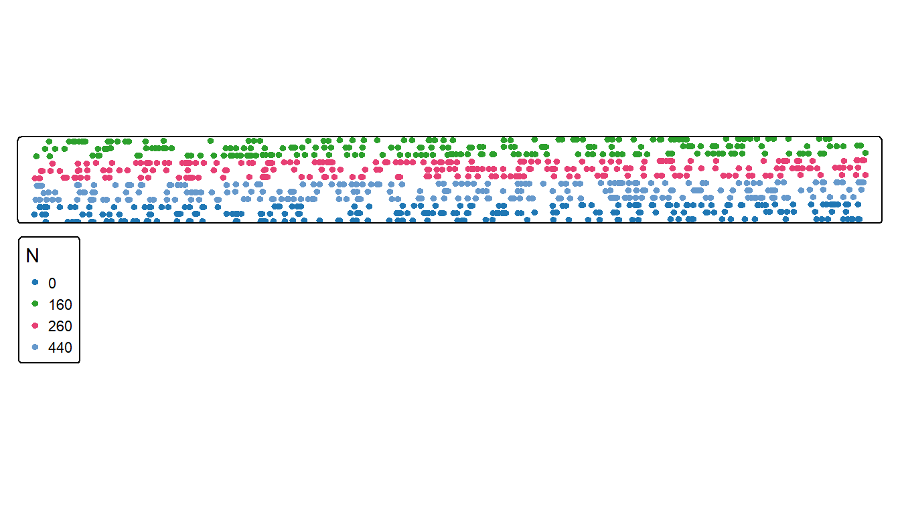
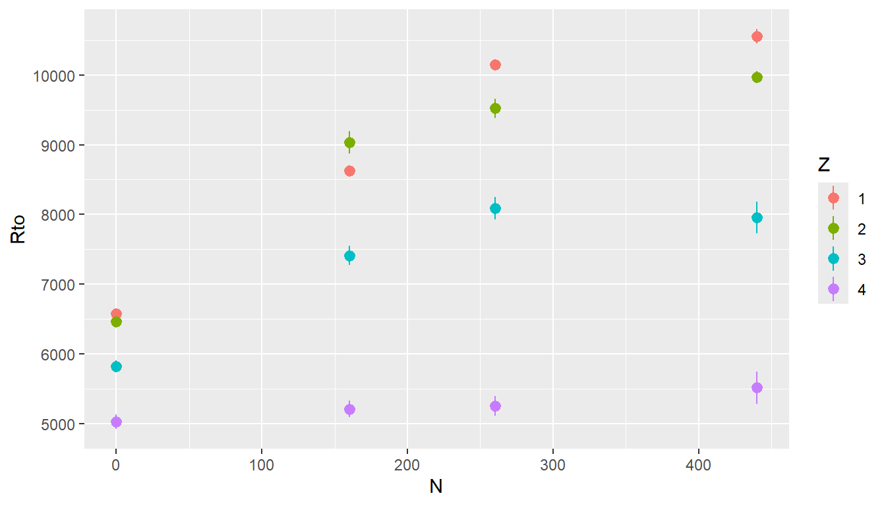
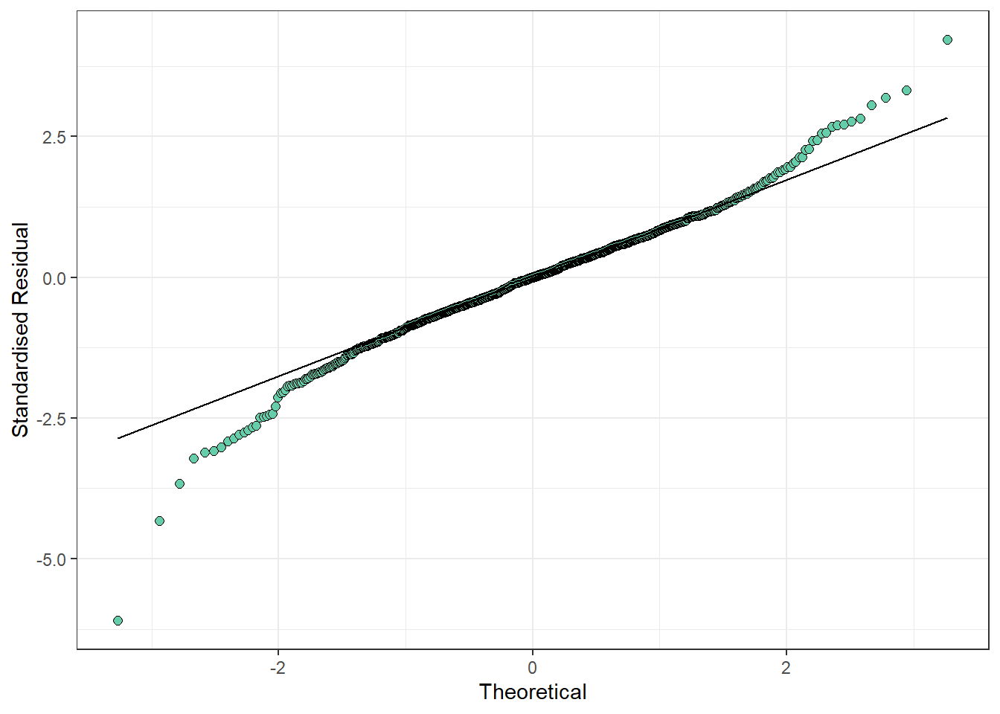
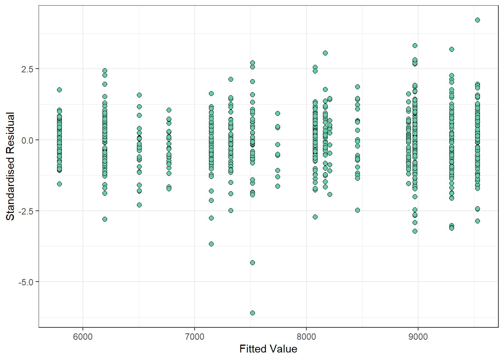
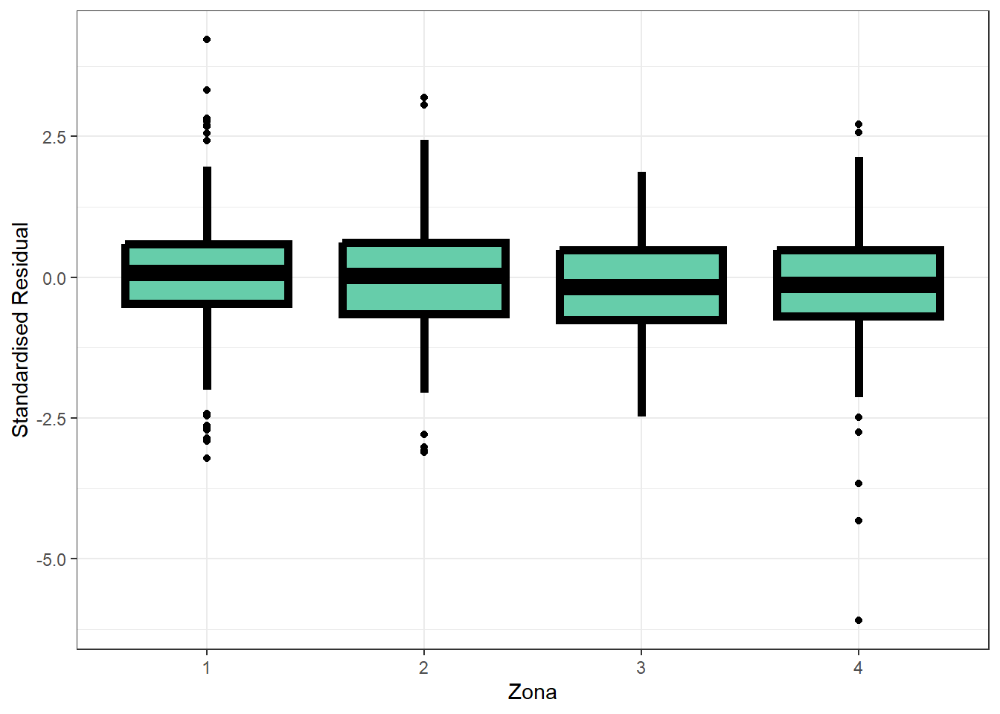
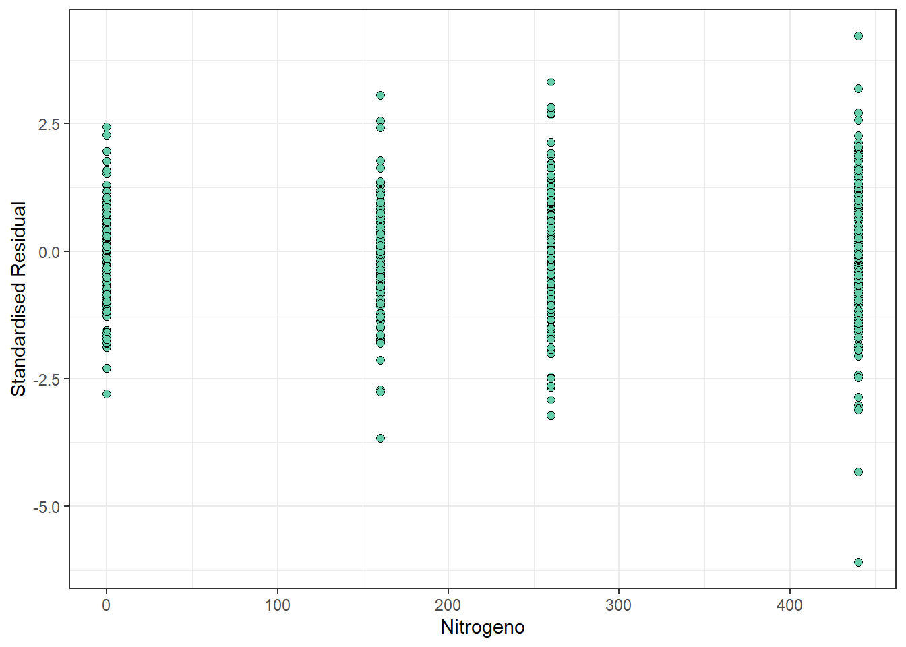
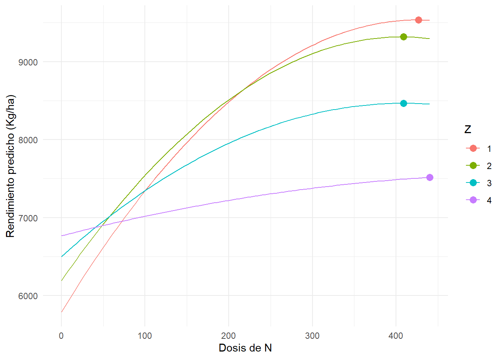

# Manejo de datos
library(dplyr)
# Manejo de datos espaciales
library(sf)
# Graficos
library(ggplot2)
# Mapas y graficos de datos espaciales
library(tmap)
# Ajuste de modelos Mixtos
library(nlme)
# Comparacion de medias
library(emmeans) Ensayo Agricultura de Precisión - Regresión
- Se evaluaron cuatro dosis de nitrógeno (N) en cuatro zonas de manejo.
- Es de interés conocer la dosis óptima de nitrogeno para cada zona homogénea.
Estadistica descriptiva
Note
Se realiza un muestreo de la base de datos dado la demora computacional en el ajuste del modelo con correlación espacial.
set.seed(2025)
datos_ensayo_n <- read_sf('Datos/Dia 1/Ensayo/EnsayoCurso.shp')
datos_ensayo_n <-
datos_ensayo_n |>
mutate(Z = as.character(Z),
N2 = N * N) |>
group_by(N, Z) |>
slice_sample(prop = 0.15)
datos_ensayo_n <-
cbind(datos_ensayo_n,
st_coordinates(datos_ensayo_n))
head(datos_ensayo_n)| Lote | Rto | N | Z | N2 | X | Y | geometry |
|---|---|---|---|---|---|---|---|
| LP08 | 6478.404 | 0 | 1 | 0 | 416415.4 | 6304603 | POINT (416415.4 6304603) |
| LP08 | 6500.213 | 0 | 1 | 0 | 416725.4 | 6304614 | POINT (416725.4 6304614) |
| LP08 | 6507.766 | 0 | 1 | 0 | 416902.8 | 6304605 | POINT (416902.8 6304605) |
| LP08 | 6416.383 | 0 | 1 | 0 | 416954.2 | 6304624 | POINT (416954.2 6304624) |
| LP08 | 6428.191 | 0 | 1 | 0 | 416415.8 | 6304613 | POINT (416415.8 6304613) |
| LP08 | 6122.872 | 0 | 1 | 0 | 416417.6 | 6304603 | POINT (416417.6 6304603) |
tm_shape(datos_ensayo_n) +
tm_dots(fill = 'Rto')
tm_shape(datos_ensayo_n) +
tm_dots(fill = 'Z',
fill.scale = tm_scale_categorical())
tm_shape(datos_ensayo_n) +
tm_dots(fill = 'N',
fill.scale = tm_scale_categorical())
ggplot(datos_ensayo_n, aes(N, Rto, color = Z, group = Z)) +
stat_summary()No summary function supplied, defaulting to `mean_se()`
Ajuste de modelo
El modelo ajustado considera el rendimiento (\(\text{Rto}\)) en función de la zona (\(Z\)), la dosis de nitrógeno (\(N\)) y sus interacciones hasta el tercer orden.
\[ \begin{align*} \text{Rto}_i &= \beta_0 + \beta_1 \text{Z}_i + \beta_2 \text{N}_i + \beta_3 \text{N}_i^2 + \beta_4 (\text{Z}_i \cdot \text{N}_i) + \beta_5 (\text{Z}_i \cdot \text{N}_i^2) + \beta_6 (\text{Z}_i \cdot \text{N}_i \cdot \text{N}_i^2) + \varepsilon_i \end{align*} \]
Se ajustarán modelos de errores independientes (\(\varepsilon \sim \mathcal{N}(0,I \sigma^2)\)) y modelos que contemplen la correlación espacial en función de las coordenadas \(X\) e \(Y\), sin efecto nugget: \[ \varepsilon \sim \mathcal{N}(0, \sigma^2 \Sigma) \]
Ajuste de modelo
Sin contemplar correlación espacial
mdl_errores_indep <- gls(Rto ~ N + N2 + Z + N*Z + N2*Z + N*N2*Z,
data = datos_ensayo_n)Contemplando correlación espacial
mdl_errores_corr_exp <- gls(Rto ~ N + N2 + Z + N*Z + N2*Z + N*N2*Z,
correlation = corExp(form=~ X + Y,
nugget=FALSE,
metric='euclidean'),
data = datos_ensayo_n)
mdl_errores_corr_gau <- gls(Rto ~ N + N2 + Z + N*Z + N2*Z + N*N2*Z,
correlation = corGaus(form=~ X + Y,
nugget=FALSE,
metric='euclidean'),
data = datos_ensayo_n)
mdl_errores_corr_lin <- gls(Rto ~ N + N2 + Z + N*Z + N2*Z + N*N2*Z,
correlation = corLin(form=~ X + Y,
nugget=FALSE,
metric='euclidean'),
data = datos_ensayo_n)
mdl_errores_corr_spher <- gls(Rto ~ N + N2 + Z + N*Z + N2*Z + N*N2*Z,
correlation = corSpher(form=~ X + Y,
nugget=FALSE,
metric='euclidean'),
data = datos_ensayo_n)
mdl_errores_corr_rationalquad<- gls(Rto ~ N + N2 + Z + N*Z + N2*Z + N*N2*Z,
correlation = corRatio(form=~ X + Y,
nugget=FALSE,
metric='euclidean'),
data = datos_ensayo_n)Comparacion de modelos
La comparación de los modelos se realiza en términos de AIC y BIC. Menor valor de índice indica mejor ajuste.
data.frame(
Modelo = c('Errores Independientes',
'Correlacion Espacial (Exp)',
'Correlacion Espacial (Gaussian)',
'Correlacion Espacial (Linear)',
'Correlacion Espacial (Spheric)',
'Correlacion Espacial (Rational Quadratic)'),
AIC = c(AIC(mdl_errores_indep),
AIC(mdl_errores_corr_exp),
AIC(mdl_errores_corr_gau),
AIC(mdl_errores_corr_lin),
AIC(mdl_errores_corr_spher),
AIC(mdl_errores_corr_rationalquad)),
BIC = c(BIC(mdl_errores_indep),
BIC(mdl_errores_corr_exp),
BIC(mdl_errores_corr_gau),
BIC(mdl_errores_corr_lin),
BIC(mdl_errores_corr_spher),
BIC(mdl_errores_corr_rationalquad))
) |>
arrange(AIC, BIC)| Modelo | AIC | BIC |
|---|---|---|
| Correlacion Espacial (Exp) | 14828.11 | 14914.71 |
| Correlacion Espacial (Linear) | 14899.51 | 14986.11 |
| Correlacion Espacial (Spheric) | 14899.51 | 14986.11 |
| Correlacion Espacial (Rational Quadratic) | 14915.44 | 15002.05 |
| Correlacion Espacial (Gaussian) | 15012.82 | 15099.42 |
| Errores Independientes | 15088.72 | 15170.51 |
Modelo final
Se realiza una eliminación de valores extremos. Valores extremos son aquellos valores poco probables de ocurrir en el contexto del modelo ajustado.
datos_ensayo_n_noout <-
datos_ensayo_n[abs(residuals(mdl_errores_corr_exp, type = 'normalized')) < 3,]
mdl_errores_corr_exp <- gls(Rto ~ N + N2 + Z + N*Z + N2*Z,
correlation = corExp(form=~ X + Y,
nugget=FALSE,
metric='euclidean'),
data = datos_ensayo_n_noout)
datos_ensayo_n_noout$resid_corr_exp <-
residuals(mdl_errores_corr_exp, type = 'normalized')
datos_ensayo_n_noout$pred_corr_exp <-
predict(mdl_errores_corr_exp)
ggplot2::ggplot(datos_ensayo_n_noout, ggplot2::aes(sample = resid_corr_exp)) +
ggplot2::geom_qq(
colour = "black",
fill = "aquamarine3",
size = 2,
shape = 21
) +
ggplot2::geom_qq_line() +
ggplot2::theme_bw() +
ggplot2::labs(y = "Standardised Residual", x = "Theoretical")
ggplot2::ggplot(
data = datos_ensayo_n_noout,
mapping = ggplot2::aes(x = pred_corr_exp, y = resid_corr_exp)
) +
ggplot2::geom_point(
colour = "black",
fill = "aquamarine3",
size = 2,
shape = 21
) +
ggplot2::theme_bw() +
ggplot2::labs(y = "Standardised Residual", x = "Fitted Value")
ggplot2::ggplot(
data = datos_ensayo_n_noout,
mapping = ggplot2::aes(x = Z, y = resid_corr_exp)
) +
ggplot2::geom_boxplot(
colour = "black",
fill = "aquamarine3",
size = 2,
shape = 21
) +
ggplot2::theme_bw() +
ggplot2::labs(y = "Standardised Residual", x = "Zona")
ggplot2::ggplot(
data = datos_ensayo_n_noout,
mapping = ggplot2::aes(x = N, y = resid_corr_exp)
) +
ggplot2::geom_point(
colour = "black",
fill = "aquamarine3",
size = 2,
shape = 21
) +
ggplot2::theme_bw() +
ggplot2::labs(y = "Standardised Residual", x = "Nitrogeno")



joint_tests(mdl_errores_corr_exp)| model term | df1 | df2 | F.ratio | p.value | |
|---|---|---|---|---|---|
| 1 | N | 1 | 748.19 | 71.015 | 0.0000000 |
| 3 | N2 | 1 | 772.05 | 22.751 | 0.0000022 |
| 5 | Z | 3 | 573.64 | 8.920 | 0.0000088 |
| 2 | N:Z | 3 | 874.97 | 11.393 | 0.0000002 |
| 4 | N2:Z | 3 | 877.05 | 4.184 | 0.0059351 |
modelb <- emmeans(mdl_errores_corr_exp, c("Z", "N"), type = "response")
multcomp::cld(modelb, Letters = LETTERS, alpha = 0.05) |>
as.data.frame(row.names = NULL) |>
dplyr::rename(mean = emmean) | Z | N | mean | SE | df | lower.CL | upper.CL | .group | |
|---|---|---|---|---|---|---|---|---|
| 4 | 4 | 217.4645 | 7191.933 | 353.3154 | 9.249300 | 6395.950 | 7987.917 | A |
| 3 | 3 | 217.4645 | 7733.930 | 334.2457 | 7.617351 | 6956.366 | 8511.494 | B |
| 1 | 1 | 217.4645 | 8107.623 | 330.1085 | 7.083304 | 7328.898 | 8886.349 | BC |
| 2 | 2 | 217.4645 | 8156.014 | 324.5728 | 6.811757 | 7384.201 | 8927.828 | C |
coefficients(mdl_errores_corr_exp) (Intercept) N N2 Z2 Z3
5.789522e+03 1.761205e+01 -2.071094e-02 4.061305e+02 7.127285e+02
Z4 N:Z2 N:Z3 N:Z4 N2:Z2
9.791665e+02 -2.265393e+00 -7.998081e+00 -1.487809e+01 1.847995e-03
N2:Z3 N2:Z4
8.943546e-03 1.836445e-02 Grafico de modelo ajustado
Grilla de predicción
range_n_by_zone <- datos_ensayo_n_noout |>
st_drop_geometry() |>
group_by(Z) |>
summarise(min_N = min(N), max_N = max(N))
grid_pred <- range_n_by_zone |>
rowwise() |>
do({
data.frame(
Z = .$Z,
N = seq(.$min_N, .$max_N, length.out = 100)
)
}) |>
ungroup() |>
mutate(
N2 = N^2
)Prediccion de rendimiento
grid_pred$Rto_pred <- predict(mdl_errores_corr_exp, newdata = grid_pred)Optima dosis de N para cada zona
opt_n_by_zone <- grid_pred %>%
group_by(Z) %>%
slice_max(Rto_pred, n = 1, with_ties = FALSE) |>
select(Z, N, Rto_pred)
opt_n_by_zone| Z | N | Rto_pred |
|---|---|---|
| 1 | 426.6667 | 9533.686 |
| 2 | 408.8889 | 9317.032 |
| 3 | 408.8889 | 8465.904 |
| 4 | 440.0000 | 7517.349 |
Grafico de rendimientos predichos
ggplot(grid_pred, aes(x = N, y = Rto_pred, color = Z)) +
geom_line() +
geom_point(data = opt_n_by_zone, aes(x = N, y = Rto_pred), size = 3) +
labs(x = "Dosis de N", y = "Rendimiento predicho (Kg/ha)") +
theme_minimal()